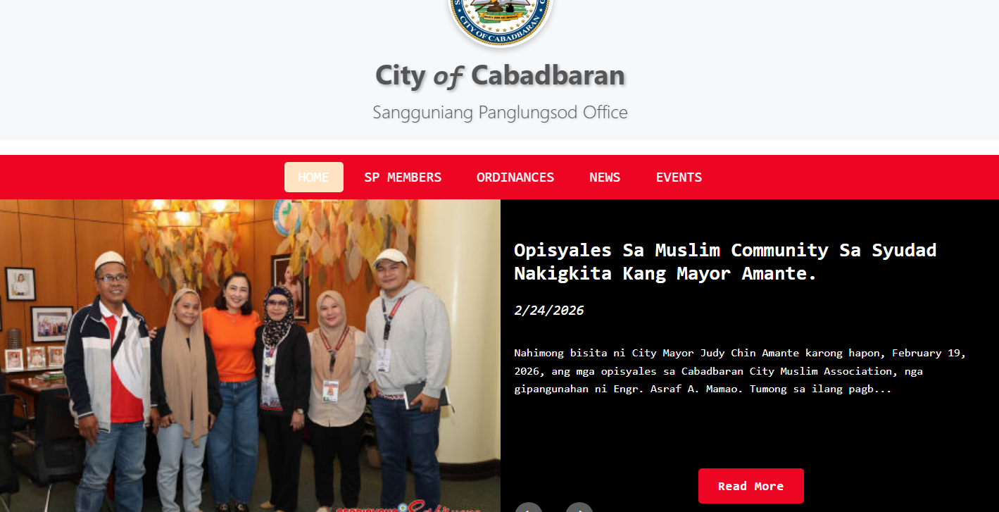

My Projects
These projects demonstrate my hands-on experience in building real-world web applications, from interactive front-end interfaces to full-stack systems with authentication, APIs, and databases. I focus on writing clean, maintainable code and developing scalable solutions using modern web technologies. Each project reflects my growth as a developer and my readiness to contribute in a professional environment.
< CBR Dashboard System />
Full-Stack Web Application

A secure administrative dashboard for managing city content and data in real time. Built with a modular full-stack architecture and connected to the public website via REST APIs.
- JWT-based Admin Authentication
- Full CRUD for News, Events, Ordinances & Members
- RESTful API integration with Public Website
- MongoDB database with structured schema design
- Deployed on Render
What I Improved: Backend architecture design, API structuring, authentication handling, and scalable database modeling.
< CBR Public Website />
Full-Stack Web Application
A public-facing city information platform dynamically connected to the CBR Dashboard via REST APIs.
- Dynamic API-driven content loading
- Search and pagination
- Responsive modular UI design
- Live stream and calendar integration
- Deployed on Netlify
What I Improved: API consumption, frontend data rendering, and responsive UI structuring.
< Notebook app />
Full-Stack Web Application

A full-stack note-taking application with authentication and database-backed file management.
- User authentication system
- Create, rename, delete notes
- Database-driven storage
- Modular frontend/backend structure
- Deployed on Render
What I Improved: Data persistence handling, route protection, and backend modularization.
< Damath Board Game />
Interactive Frontend Project

An interactive educational board game combining checkers mechanics with math-based scoring logic.
- Game logic implementation
- Score calculation system
- Timer and sound effects
- Dynamic DOM manipulation
What I Improved: Complex logic handling, state management, and interactive UI design.
< Landing Page Design />
Frontend UI Project

A fully responsive personal portfolio with smooth navigation and structured content presentation.
- Responsive layout
- Modern UI design
- Section-based navigation
- Optimized for mobile devices
What I Improved: Layout structuring, UI consistency, and responsive design techniques.
< Random Word Machine />
Interactive Frontend Project

An interactive app that generates random words with definitions and dynamic background transitions.
- API-based word fetching
- Dynamic background color changes
- Interactive UI updates
- Responsive design
What I Improved: API integration, DOM updates, and event-driven UI logic.
< Rock Paper Scissors Game />
Interactive Frontend Project

A browser-based interactive game where users compete against the computer with animated UI and sound effects.
- Game state management
- Score tracking system
- Animated transitions
- Sound and background music integration
What I Improved: Event handling, animation timing, and structured game logic implementation.